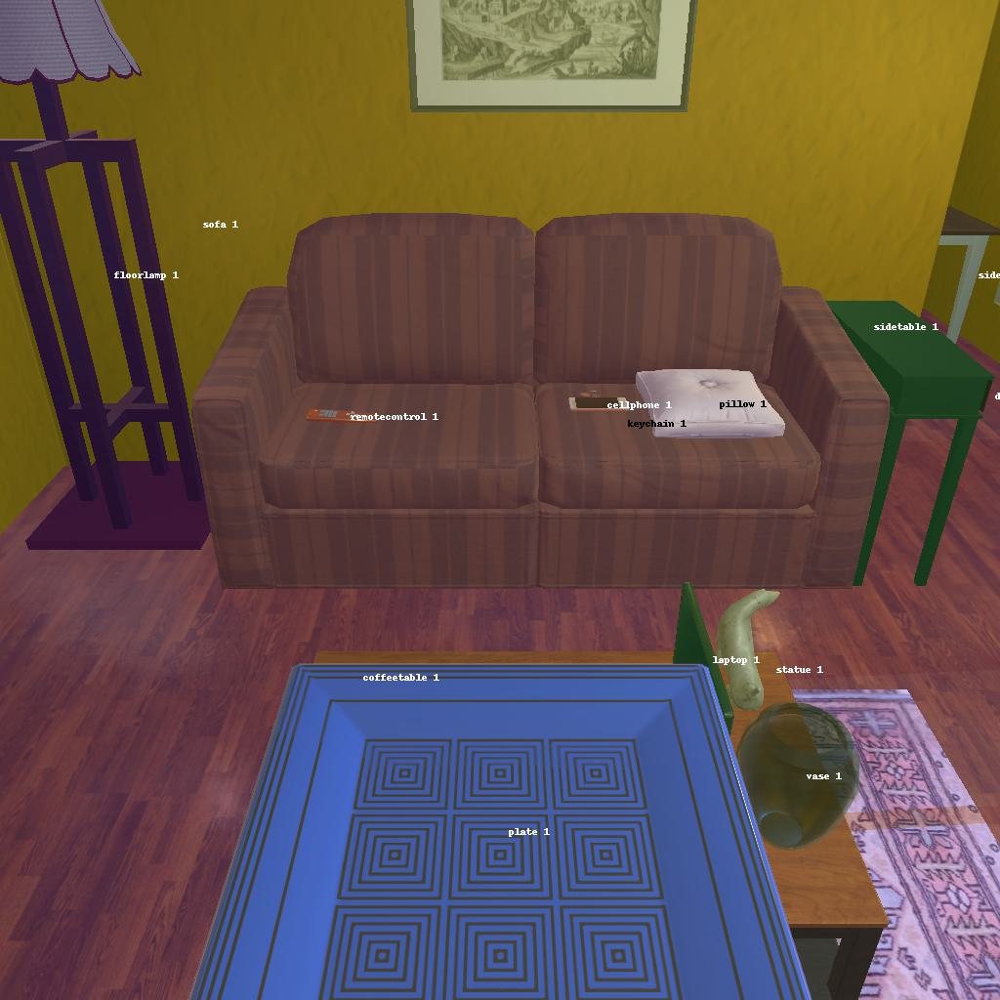
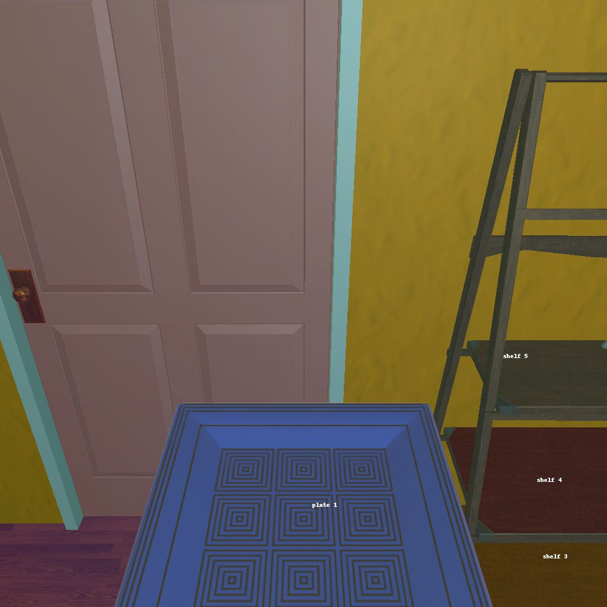

---------------------------------------------------------task: 3---------------------------------------------------------
--------------------------------------------------------------------------------------------------------------------------------------------------------------------
--------------------------------------------------------------------------------------------------------------------------------------------------------------------
Step:--------------------------------------------------------------------------8-------------------------------------------------------------------------------
----------------------------------------
VLM Prompt:
Image1:
Image2:
Image3:
**Instruction**
1. Analyze the provided image to identify all visible household objects, focusing on those relevant to the task description "look at plate under the floorlamp."
2. Use the analysis of the image and the task hint "The agent must find an object of the desired type, locate and turn on a light source with the desired object in-hand." to answer the question: what is the most reasonable action in the choices for the task description "look at plate under the floorlamp"?
4. Decide and write the answer using the template: The answer is: (i): , where i is the real number. If there is no desired object in the image, search every place based on **Initial Observation** to find the object. And if no one is exactly correct, choose a similar answer.
**Initial Observation**
You are in the middle of a room. Looking quickly around you, you can see armchair (1), garbagecan (1), tvstand (1), shelf (1-5), sofa (1), coffeetable (1), sidetable (1-2), drawer (1)
**Answer Choices**
(1): go to armchair 1
(2): go to garbagecan 1
(3): go to tvstand 1
(4): go to shelf 1
(5): go to shelf 2
(6): go to sofa 1
(7): go to sidetable 1
(8): go to sidetable 2
(9): go to drawer 1
(10): go to shelf 3
(11): go to shelf 4
(12): put plate 1 in/on shelf 5
(13): examine shelf 5
**Answer**
Let's think step by step by following the instructions.
----------------------------------------
----------------------------------------
Original Response:
The task is to "look at plate under the floorlamp." From Image1, we can see that there is a floorlamp labeled "floorlamp 1" next to the sofa. The plate labeled "plate 1" is on the coffeetable, not under the floorlamp. Therefore, the agent needs to pick up the plate and place it under the floorlamp to complete the task. The task hint suggests that the agent needs to find and turn on a light source with the desired object in-hand, which means the agent needs to pick up the plate and then turn on the floorlamp.
Based on the initial observation, the coffeetable is not listed as an option to go to, and none of the answer choices directly suggest picking up the plate or turning on the floorlamp. However, since the plate is on the coffeetable which is near the sofa and the floorlamp is next to the sofa, the most reasonable action from the given choices would be to go to the sofa first, which is labeled as "sofa 1."
The answer is: (6): go to sofa 1.
----------------------------------------
----------------------------------------
>>> Refine Original VLM Response and Get Pure Action: go to sofa 1
----------------------------------------
-----------------------------------------------------------------
Running time: 23.866625785827637 seconds
Total Money: 1.4208200000000004
-----------------------------------------------------------------
-----------------------------------------------------------------
Text Observation:You arrive at loc 5. On the sofa 1, you see a pillow 1.
-----------------------------------------------------------------
UNSUCCEED